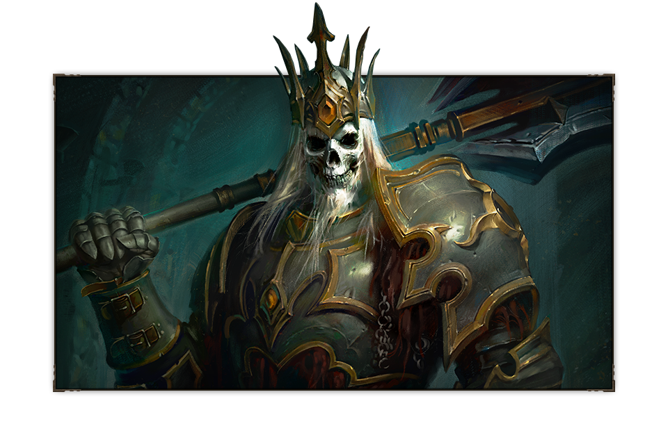
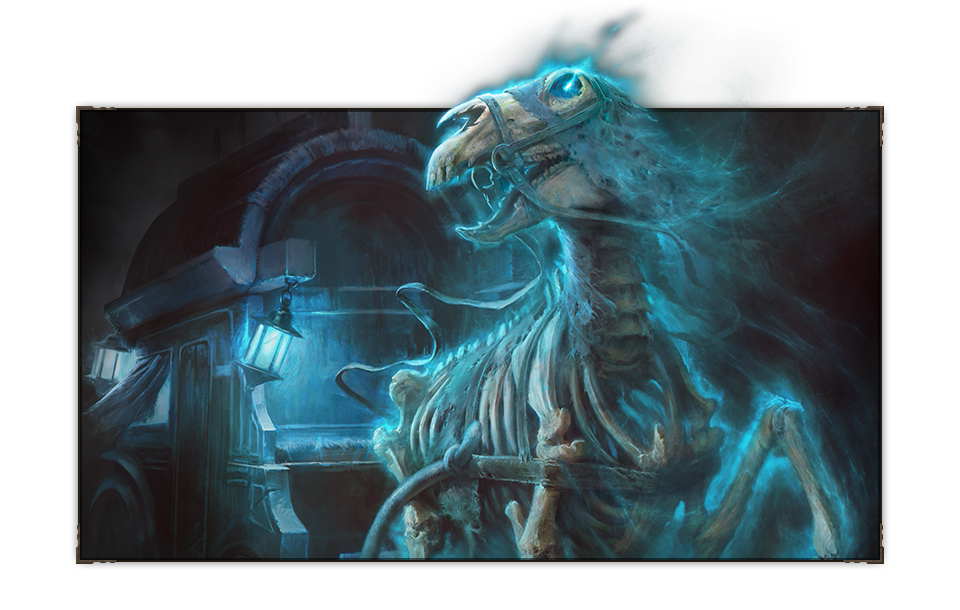
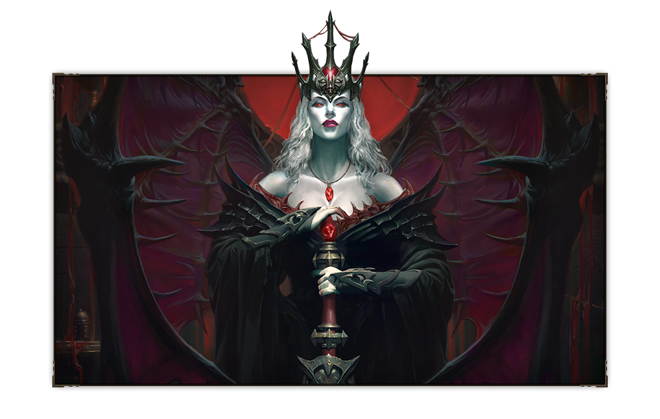
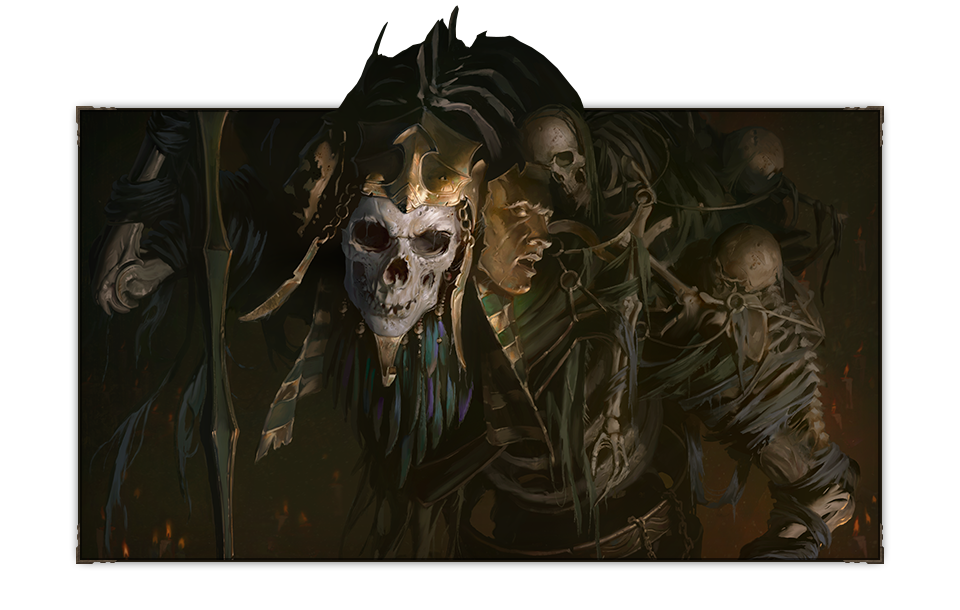
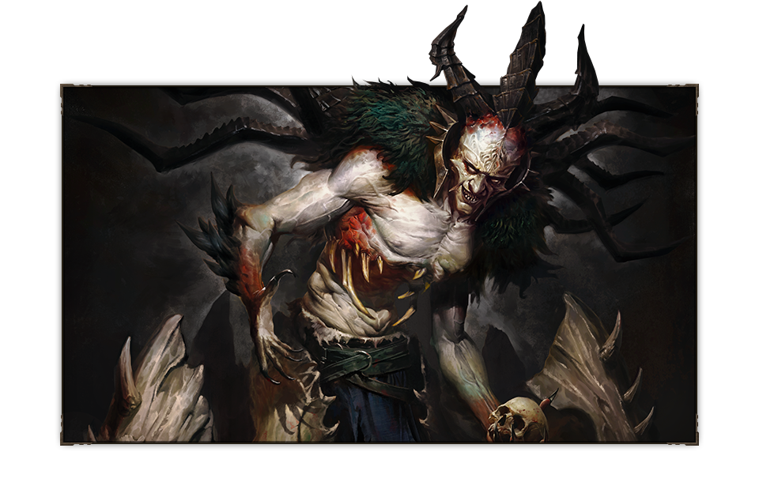
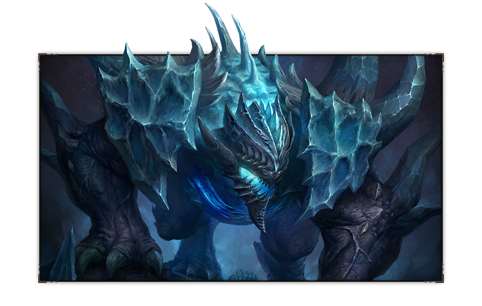

Historia
UN CAPÍTULO INÉDITO DE LA SAGA DIABLO
Al arcángel Tyrael se lo da por muerto, y la humanidad está sola para afrontar las consecuencias de sus actos. Los fragmentos de la Piedra del Mundo, aún dotados de un inmenso poder, contaminan la tierra, y los esbirros de Diablo esperan poder controlar ese poder para que el Señor del Terror pueda regresar.
encuentros
SE ALZAN NUEVOS HORRORES
el rey esqueleto
Leoric, el Rey Loco, perdió la razón bajo el influjo de Diablo, Señor del Terror. Las atrocidades que cometió en vida solo podrían compararse a las que llevará a cabo después de muerto si algún día llega a volver a Santuario con su ejército de muertos vivientes
carruaje poseido
Los aventureros que atraviesen el Cementerio de Ashwold no tardarán en familiarizarse con el carruaje poseído, que, según se dice, transporta las almas de los muertos.
la condesa
La Condesa se crio en un aislado castillo de Khanduras rodeado de bosque. Durante años, utilizó la sangre de centenares de cautivos para darse baños que preservaban su floreciente belleza y, cuando al fin lograron poner fin a sus desmanes, hubo que encerrarla en la torre del castillo porque era imposible darle muerte
fahir
El monarca inmortal llamado Fahir reinó sobre Shassar mucho antes de que se tornara un páramo. Su reinado se caracterizó por los atroces sacrificios de muchos de sus parientes y el uso de rituales de longevidad malditos en beneficio de los nobles y el rey, que se presentaba como una deidad viviente. Su dinastía perduró varias generaciones antes de que un grupo de disidentes destruyera su cetro, símbolo de su poder, y el Mar Shassar se volviese ingobernable.
baal
Baal, uno de los tres demonios mayores y corruptor de la Piedra del Mundo, se solaza con la aniquilación absoluta, tanto si la incita como si la inspira. El Señor de la Destrucción habría arrasado la humanidad entera desde Santuario de no haber sido por el sacrificio del arcángel Tyrael.
coloso glacial
En la Caverna de los Ecos se esconde una piedra que emana un frío espantoso: la lágrima de hieloflama. El coloso glacial, formado con la carne de las almas rapaces que buscaban hacerse con el poder de la piedra, es su guardián.
